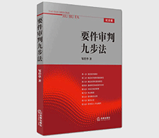

要件审判九步法

| 作者: 邹碧华 著 | 开本: 16开 |
| 出版社: 法律出版社 | 纸张: 胶版纸 |
| 出版时间: 2010-11 | 页数: 276页 |
| 版次: 1 | 字数: 266千字 |
| ISBN: 9787511811660 | 定价: 36.00 |
| 分类: 地理 | 装帧: 平装 |
内容简介:
这是一位学者型法官的审判经验和思想精华这是在前人探索的基础上，融审判实践与理论思考为一体，将法律适用过程创造性地分解为九步形成的《要件审判九步法》，层层递进，步步为营，是审判活动成为一门裁判艺术。通过它，您将了解法官的思维模式和办案思路；通过它，您会发现法官的智慧和法律的魅力。《要件审判九步法》对于法律从业人员培养法律思维方法和提高法律适用能力具有很强的启发意义，对于律师办案、法官审案具有实际的操作指引作用。《要件审判九步法》理论和实践相结合，详细介绍了“要件审判九步法”的具体内容（第一步固定权利请求；第二步确定权利请求基础规范；第三步确定抗辩权基础规范；第四步基础规范构成要件分析；第五步诉讼主张的检索；第六步争点整理；第七步要件事实证明；第八步事实认定；第九步要件归入作出裁判）。着眼于提高法官的逻辑思维能力和法律适用能力，对法官审理案件和制作裁判文书具有很好的指导意义。
作者简介:
邹碧华，男，1967年出生于江西奉新，毕业于北京大学法学院，获法学博士学位。现任上海市长宁区人民法院院长、华东政法大学兼职教授。2006年被评为上海市十大杰出青年、上海市优秀中青年法学家。2009年被评为首届“全国审判业务专家”。
Copyright © 2018-2020 徐悦佳. All rights reserved.